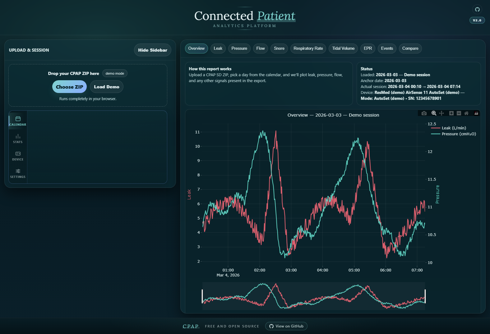
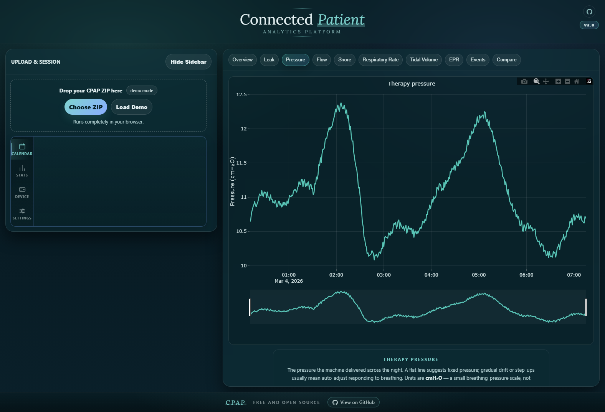
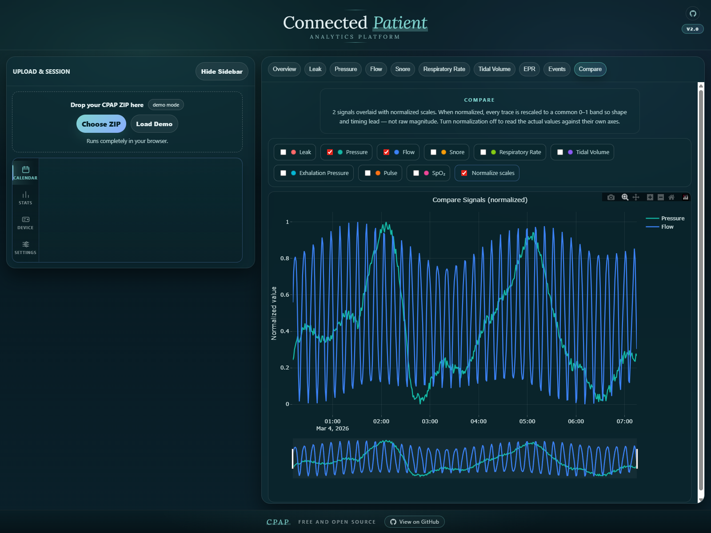
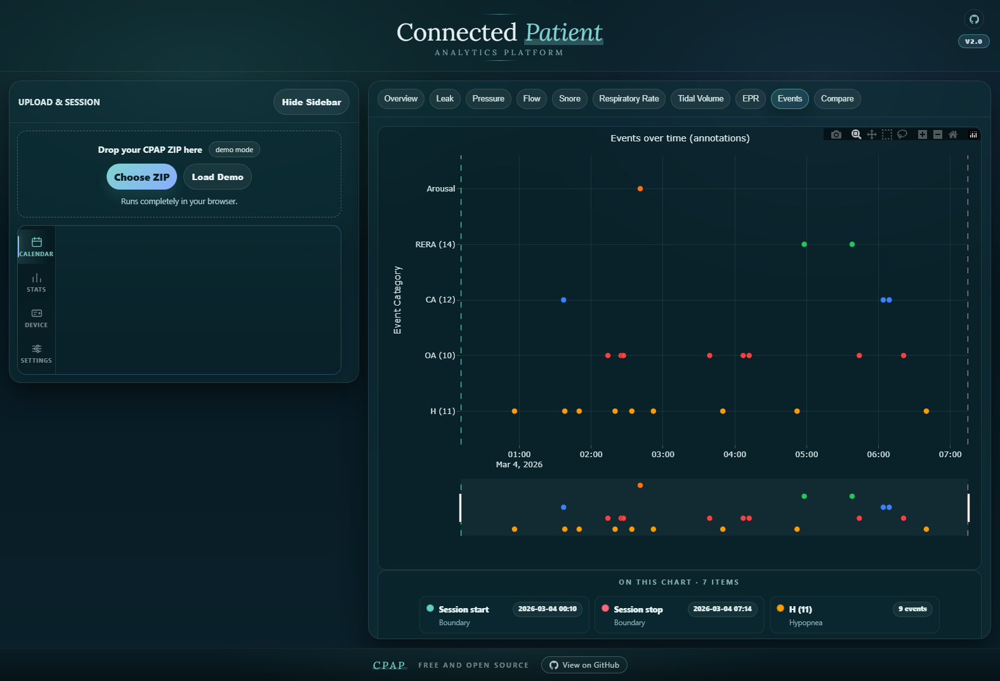

Your CPAP machine records dozens of signals per second every night you sleep. The factory app gives you a usage score and a single AHI number. This one opens the raw signal — leak, pressure, flow, snore, events, every sample — and plots it as something you can actually read.
The manufacturer app surfaces three numbers. This one parses the EDF files on the card and plots every sample — pressure ramps, leak excursions, event annotations, the lot.
Every tab writes its own summary for the night you picked — usage hours, leak behavior, where the pressure settled, event counts. No jargon to decode.
One HTML file. Double-click it. Works offline, works in five years, works whether or not the server this site lives on is still up.
The app expects a ZIP made from the root of a CPAP SD-card copy, keeping the full folder structure intact so it can find what it needs.
Power off your CPAP and safely eject the SD card.
Drag the full SD contents into a folder on your computer.
Create one .zip. Optional: trim old DATALOG/ days to shrink it.
Drop the ZIP in, pick a night, and the charts render locally.
Four of the tabs, in the order a curious sleeper usually hits them. Screenshots are from the built-in demo — not real patient data.

Leak and pressure plotted together across the detected session — so you can see at a glance whether the mask held, where the pressure settled, and whether the two ever argued with each other.
Underneath, a plain-language summary writes itself for every night you pick: usage hours, 95th-percentile leak, median pressure, and how many events the machine flagged.

The factory app shows you an average. This plots every sample the machine recorded — the ramp-up, the holds, and the responses to breathing events as they happened.
Especially honest on APAP: you can see whether the machine actually adjusted all night, or quietly parked at one pressure and stayed there.

Pick any combination of leak, pressure, flow, snore, respiratory rate, tidal volume, or exhalation pressure and stack them on one plot — normalized to the same axis, or kept raw — to see how they move together through the night.

Obstructive apneas, hypopneas, RERAs, central pauses, flow limitations — whatever the machine chose to flag that night is parsed out of the EDF annotations, grouped by code, and charted with session-boundary markers.
A glossary underneath translates each tag into plain English, so you're not googling "CSR" at 2 a.m.
Whatever the machine recorded that night shows up as its own tab. You don't pick them — the app inventories the ZIP and lights up whatever's there.
This is a single local file. Your data is read into your browser and never sent anywhere.